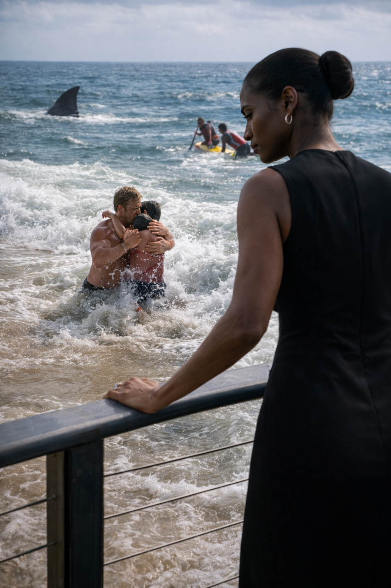
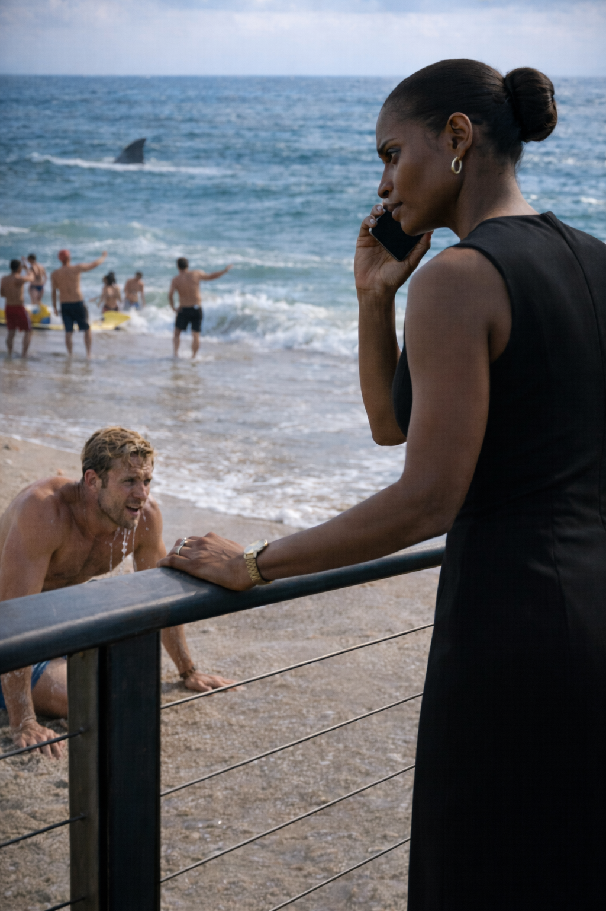

The Aesthetic
The White Knight
The Shark of Wall Street · Dossier
Evelyn Vance — U.S. Attorney
Evelyn Vance didn't just go to law school; she was bred for the bench. Her grandfather was a Civil Rights attorney who marched in Selma. Her father was the first Black Federal Judge in the Second Circuit.
She carried the weight of a dynasty on her shoulders, and she wore it like armor. She graduated Summa Cum Laude from Harvard Law. She clerked for the Supreme Court. She never missed a deadline. She never lost a motion.
The Monday Massacre
Five years ago, she indicted the entire C-Suite of a "Too Big To Fail" bank for insider trading. When the press asked if she was worried about crashing the economy, she adjusted her rimless glasses and said:
"The market survives on trust. I just took out the trash."

Evelyn lived her life in a corset of expectations. Julian Hayes was the only person who knew how to unlace it.
They met ten years ago in Cambridge. She was a law student drowning in expectations; he was an architecture grad student who saw the world in skylines. He didn't care about her last name. He didn't care about her GPA. He was the only place she could go where she didn't have to be "The Sheriff."
It was 11:00 PM on a Tuesday. The Harvard Law library was a tomb of silence. Evelyn was buried behind a fortress of casebooks, preparing for moot court.
"You're thinking too loud. I can hear your gears grinding from the hallway."
Julian leaned against the heavy oak table, wearing a leather jacket that smelled of rain and drafting graphite. He reached out and closed the heavy book in front of her.
"You have to breathe, Ev."
He took her hand—his palm rough, warm, and grounding—and pulled her into the shadows of the federal archives. He backed her against a row of leather-bound books. He didn't kiss her immediately. He just traced the tension in her jaw.
"You wear this armor so tight. Doesn't it get heavy?"
"It's necessary."
"Not with me."
When he finally kissed her, it wasn't tentative. It was a claiming. In the quiet of the library, surrounded by the weight of the law, Evelyn finally let go.
Two weeks later, inside his Jeep during a downpour overlooking the Charles River, Evelyn was exhausted. She felt brittle. Julian wrapped a blanket around her shoulders.
"Why are you so good to me? I'm difficult. I'm abrasive."
"You're structural. You hold everything up, Evelyn. The family name, the grades, the justice. But even steel needs to rest."
He kissed the sensitive spot beneath her ear. It wasn't just desire; it was relief. With Julian, she didn't have to be the genius. She could just be Evelyn.
They woke up in his apartment. The light filtered through the drafting table. Evelyn watched him sleep. He stirred, opening one eye with a lazy smile.
"What's your verdict, Counselor?"
"The verdict is that I'm keeping you. Life sentence."
"Without parole?"
"Without parole."
Location: Dune Road, East Hampton. Sunday, 11:00 AM.
The Atlantic Ocean was a sheet of polished glass. Evelyn sat on the deck of her beach house, wrapped in a white cashmere shawl, reviewing a deposition. Her fiancé, Julian, was down by the water. Julian was everything Evelyn wasn't: relaxed, athletic, and blissfully unconnected to the dark machinery of New York.
Then, the scream cut through the salt air.
"SHARK! GET OUT! SHARK!"
The water churned. Thirty yards out, a dorsal fin sliced through the surface. The crowd froze. But not Julian. He dropped the football and sprinted toward the water. He dove into the surf, putting his own body between a group of teenagers and the dark shape circling in the deep.

Evelyn gripped the railing. She watched Julian thrashing in the whitewater, guiding the last kid to the shore. It was chaos. It was primal.
Then, her phone rang. The encrypted line.
"Vance."
"Ms. Vance," the Deputy Chief’s voice was grave. "We have a situation. The Shark has surfaced."
Evelyn watched Julian dragging himself onto the sand, alive. He looked up at the deck, waving to her, a wide, adrenaline-fueled grin on his face. I beat it, Ev! I beat the shark!

Evelyn didn't wave back. She stared at the phone.
"I know. I'm looking right at it."
"Ma'am?" the Deputy said. "I'm not talking about a fish. The Shark of Wall Street just walked into the Federal Reserve. He's initiated a hostile takeover. He's not hiding anymore, Evelyn. He's hunting."
Evelyn turned her back on the ocean. "Pack my bags. And get the indictment ready. The beach is closed."
Location: The Federal Reserve Gold Vault. 50 feet below sea level. Sunday, 9:00 PM.
Evelyn didn't go home. She went straight to the source.
The vault was silent. It was a cathedral of gold bars, stacked floor to ceiling behind massive steel cages. Evelyn didn't like meeting here. It was cold. It was theatrical. But when Leland Sterling asked for a meeting, you didn't choose the Starbucks on the corner.
Sterling stood by the bars, looking at the billions in bullion with a soft, grandfatherly smile. He was seventy years old, wearing a charcoal suit that cost more than a mid-sized car. He was the Chairman of the Federal Oversight Committee—the man who whispered in the President's ear.
"Beautiful, isn't it? Twelve billion dollars of Obsidian assets. The largest seizure in DOJ history. You should be proud, Evelyn."
Evelyn stood with her back straight, her cream-colored wool coat glowing in the dim amber light.
"I didn't come here for a victory lap, Leland. You said it was urgent."
Sterling turned to face her.
"It is urgent, my dear. Because you think this gold is a trophy. But to men like The Shark... this isn't money. It's ballast."
"The Shark is finished. I seized his leverage. I seized his liquidity. He has nothing left to trade with."
Sterling laughed. It was a dry, dusty sound.
"You seized his anchor, Evelyn. You didn't sink the ship; you just cut the weight that was holding him down."
He pointed a manicured finger at the cage.
"Do you know why I asked you down here? To show you the only thing in the world that doesn't lie. Gold doesn't care who owns it. It just sits there. But the man you are hunting? He doesn't want to own the gold, Evelyn. He wants to own the cage."
"What are you talking about?"
"I'm telling you that you didn't trap him. He trapped you. He wanted this gold in one place. He wanted you to sign for it. Because now, whatever happens to this vault... happens to you."
The heavy steel phone on the wall began to ring. The sound was shrill and violent in the silence.
Sterling looked at the phone, then back at Evelyn.
"You should answer that, Madame Attorney. I believe the market is about to open."
The Establishment's Toolkit — Scene Objects